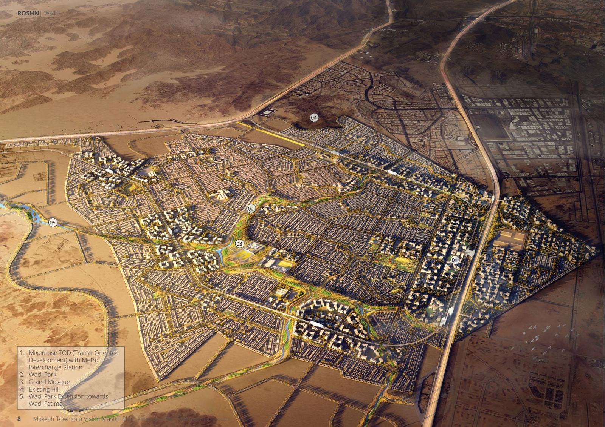

Makkah Township Vision Master Plan
Master plan · Makkah, Saudi Arabia
Vision master plan for a township in Makkah.
More from Makkah
 Jabal Thabeer Park (Mina, Makkah)Mina, Makkah · 2025
Jabal Thabeer Park (Mina, Makkah)Mina, Makkah · 2025 Kidana Al Khaif (Mina, Muzdalifah and Arafat)Makkah (Mina, Muzdalifah, Arafat) · 2024-2026
Kidana Al Khaif (Mina, Muzdalifah and Arafat)Makkah (Mina, Muzdalifah, Arafat) · 2024-2026 Jorhum DestinationMakkah · 2026
Jorhum DestinationMakkah · 2026 AlUla Strategic Framework PlanAlUla · 2022
AlUla Strategic Framework PlanAlUla · 2022 Majar Al Kabsh Pre-Concept DesignMina, Makkah · 2025
Majar Al Kabsh Pre-Concept DesignMina, Makkah · 2025 Al Mashaaer Al Mugaddassah Master PlanMakkah (Mina, Muzdalifah, Arafat) · 2024-2025
Al Mashaaer Al Mugaddassah Master PlanMakkah (Mina, Muzdalifah, Arafat) · 2024-2025